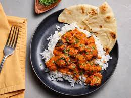

Chicken Tikka Masala Recipe

Home
Description
Chicken tikka masala is a dish consisting of roasted marinated chicken chunks in spiced curry sauce. The curry is usually creamy and orange-coloured. The dish was popularized by cooks from the Indian subcontinent living in Great Britain.
Ingredients
- Skinless chicken thighs
- Cumin
- Ground Coriander
- Turmeric
- 1 cup plain yogurt
- 2 tablespoons butter
- 1 1/2 tablespoons minced garlic
Steps
- Slice the chicken into bite-sized chunks. Combine the cubed chicken with the yogurt, lemon juice, garlic, ginger, salt, cumin, garam masala, and paprika and stir until well-coated.
- Cover and refrigerate for at least 1 hour, or overnight.
- Preheat the oven to 500°F (260°C). Line a high-sided baking pan or roasting tray with parchment paper.
- Place the marinated chicken pieces on bamboo or wooden skewers, then set them over the prepared baking pan, making sure there is space underneath the chicken to help distribute the heat more evenly. Bake for about 15 minutes, until slightly dark brown on the edges.
- Make the sauce: Heat the oil in a large pot over medium heat, then sauté the onions, ginger, and garlic until tender but not browned. Add the cumin, turmeric, coriander, paprika, chili powder, and garam masala and stir constantly for about 30 seconds, until the spices are fragrant. Stir in the tomato puree, tomato sauce, and 1 ¼ cups of water, then bring to a boil and cook for about 5 minutes. Pour in the cream.
- Remove the chicken from the skewers and add to the sauce, cooking for another 1-2 minutes. Garnish with cilantro and serve over rice or alongside naan bread.
- Enjoy!